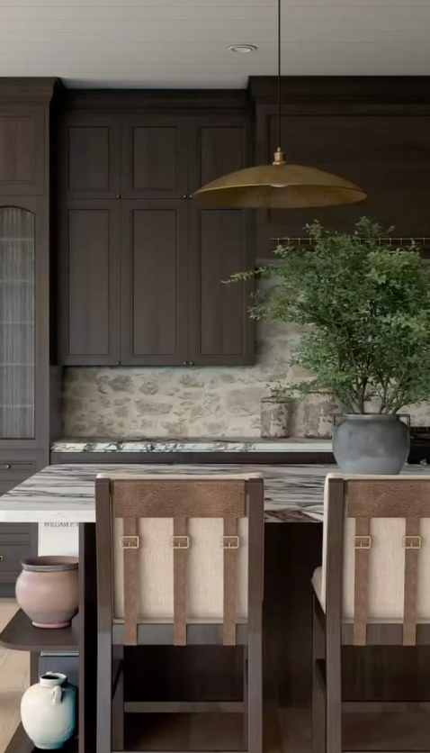
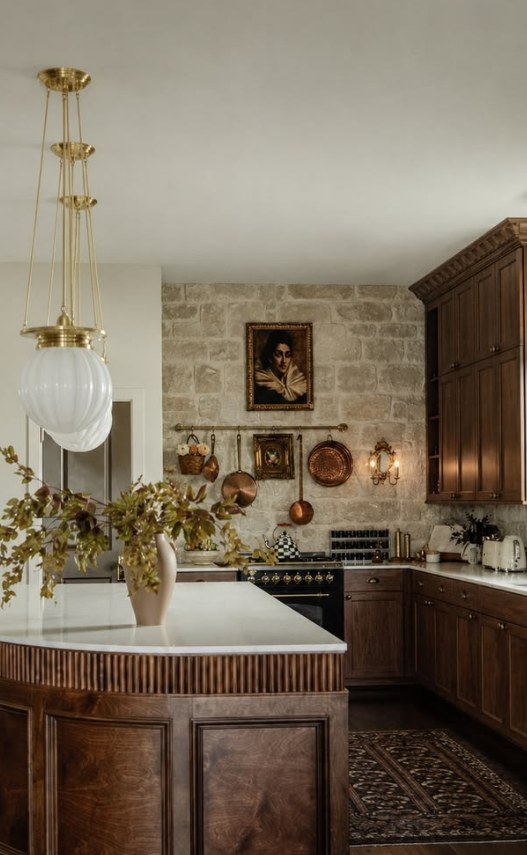
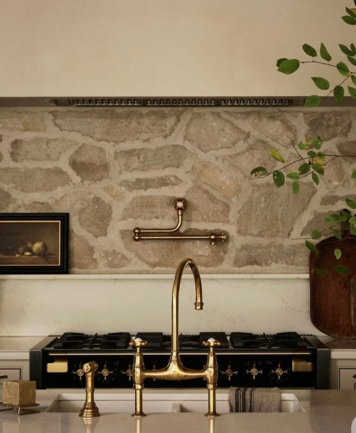
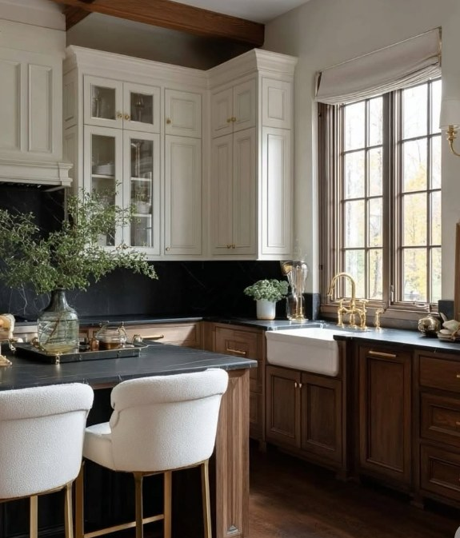
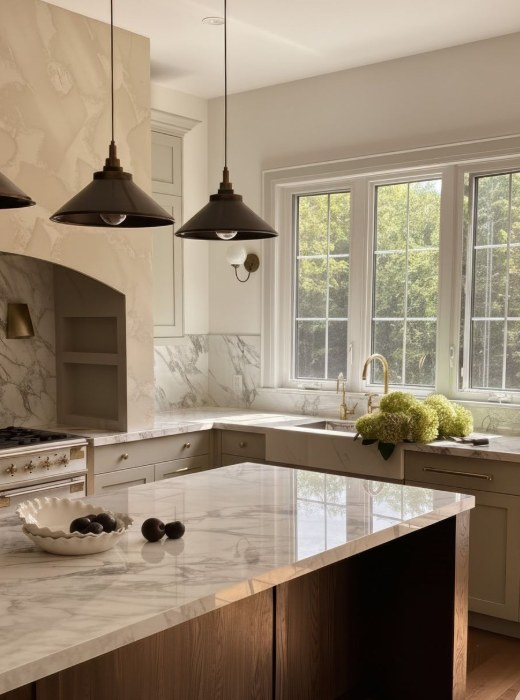

THE HERITAGE EDITCURATED WITH INTENTION
Objects of affection.
Explore a concept collection celebrating timeless shapes, honest materials, and beautiful details. Images are interior inspiration; listings are illustrative rather than purchasable products.

A LITTLE LUSTERThe Atelier Brass Pendant

THE SMALL DETAILSThe Patina Brass Accent

The Maison Walnut Console

The Provence Pendant
The Collected Vessel
AN EDITORIAL CONCEPT COLLECTION · PRICES ARE ILLUSTRATIVE · NO PURCHASES OR CHECKOUT
0 INSPIRATION PIECES SAVED